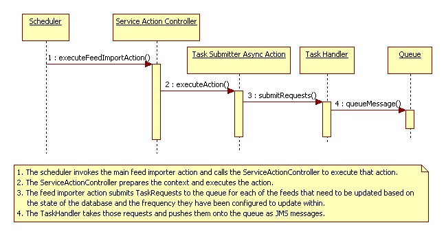

Eureka Streams

Home > Technical Specification > Software architecture > Stream plugin framework Stream plugin frameworkOverviewWhen a user subscribes to an internet feed such as flickr, google news reader, YouTube, del.icio.us, or twitter, Eureka polls these feeds for content and inserts this content into their Activity Feed. The following is the design surrounding this. Problem StatementThe user wants to subscribe to a feed and publish this feed (and subsequent updates) to their activity stream. RepercussionsSince the activity streams are denormalized across user lists, this causes many updates to memcached entries in addition to many database updates and network traffic. DesignThe Design has been divided into three sections, Submit Feed Update Actions to the Queue, Retrieve Feed Contents, and Update Streams with Buffered Activities. Submit Feed Update Actions to the QueueThe first step for the feed importer is to retrieve the content of the feeds that are registered within the system. An action then accesses those feeds and buffer off the activities that are created from their parsed content. A scheduled job invokes a single action that is responsible for retrieving the list of feeds from the database that need to be parsed and content converted to activities to be placed into the streams that are configured with those corresponding plugins. The scheduled action places a single Async Action onto the queue for each of those feed updates.  Retrieve Feed ContentsThe tasks that have been placed on the queue are now processed by the task queue processor. The Task Queue Processor pulls a message from the queue, assembles the appropriate action and passes it to the Service Action Controller. The Service Action Controller then executes the action to retrieve the feed contents, creates activities for the entries in the feed and buffers them off for the next step.
Update Streams with Buffered ActivitiesThe scheduler invokes the ServiceActionController to execute another Async Action that pulls bufferred activities off of the queue and update the appropriate streams with those activity entries.
| PAGE CONTENTSVersion 1.0 Documentation is also available for all of the following versions: |